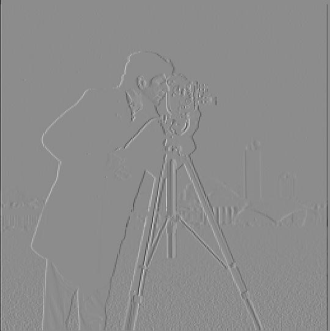
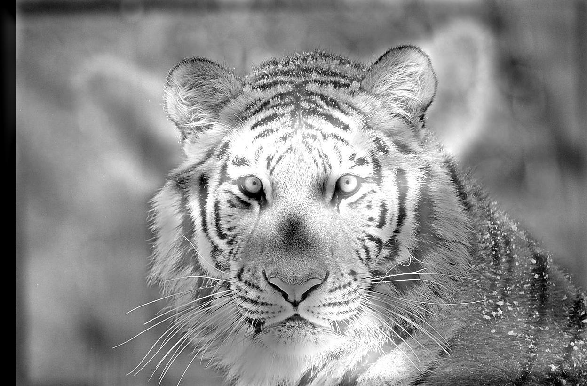
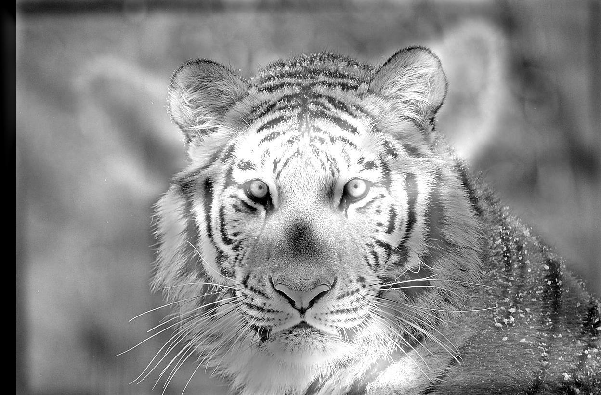
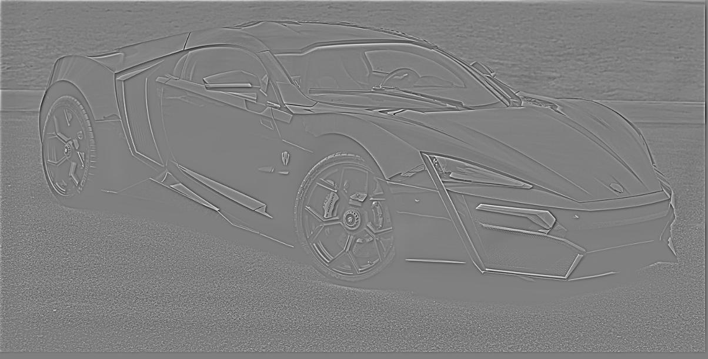
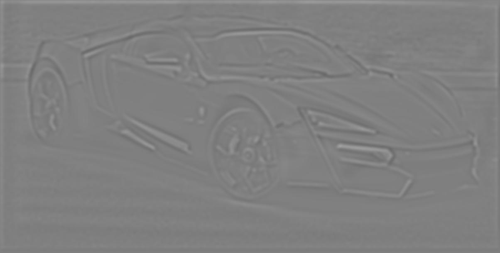
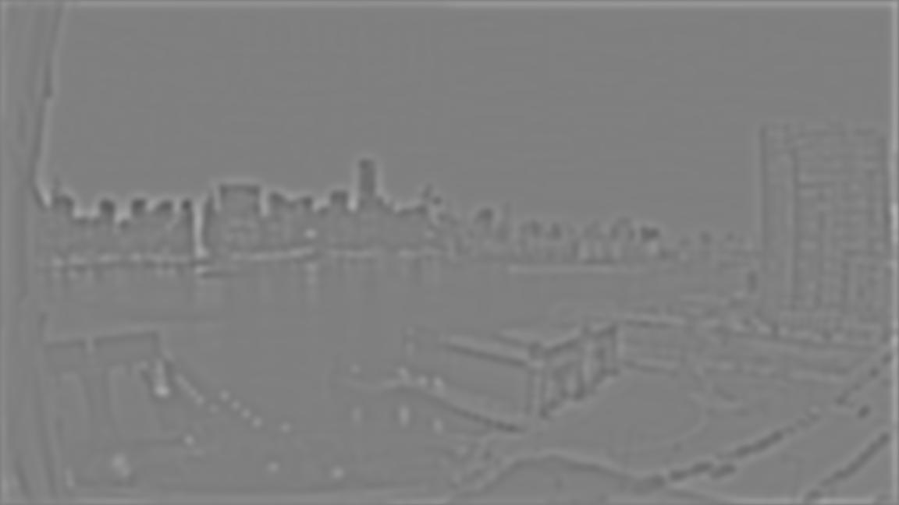
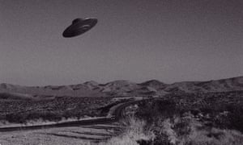

In this project I learned all about manipulating images using filters and frequencies.
Note: I am not very familiar with html, so I was unable to put a caption on any of the images, but the images do have titles which are visible after hovering over the images.

The above images show the cameraman image convolved with D_x and D_y, the gradient magnitude of the cameraman image (which is the square root of the sum of the squares of the derivatives), and the edge image (which was created using a threshold of 0.25).
The above images show the cameraman image blurred using a guassian filter and then binarized, the cameraman image convolved with the DoG filters, and the DoG_x and DoG_y filters themselves.

The above images show the original facade image, the image rotated by -3 degrees, and the corresponding histogram.
The above images show the original jail door image, the image rotated by -3 degrees, and the corresponding histogram.
The above images show the original angled lines image, the image rotated by -6 degrees, and the corresponding histogram.
The above images show the original warped building image, the image rotated by -10 degrees, and the corresponding histogram. This was my failure case; the warped building didn't really have any prominent horizontal or vertical lines, so my algorithm tried its best, but in the end the image would have looked better if it wasn't rotated.

The above images show the original taj mahal image followed by the sharpened image using the unsharp mask filter.


The above images show the original leaf image, the image blurred using using a 3 x 3 guassian kernel with sigma = 2, and the image resharpened using the unsharp mask filter. As seen above, the sharpenned image looks better than the blurred image, but still not as sharp as the original image. This is because blurring got rid of some of the image's highest frequencies, which we can't get back by sharpening; however, sharpenning does increase the amount of high frequencies already in the blurred photo, which is why the resharpened image looks better than the blurred image.


The above images show the two original images: one of a Lykan Hypersport and one of a Mclaren 720s, followed by the resulting hybrid image using the high frequencies from the Lykan and the low frequencies from the 720s. The resulting FFT plots are shown below. Hover over each image to view its title.

 

The above images show the two original images: one of a tiger and one of a baby fox, followed by the resulting hybrid image using the high frequencies from the tiger and the low frequencies from the fox.

The above hybrid image is my attempt to make a hybrid image with a ping pong ball and a basketball. I wanted to used the ping pong ball as the higher frequency image, but this image failed because the ping pong ball doesn't have any high frequencies other than it's edges. Therefore the result just looks like a circle with a very blurry basketball inside it

The above images are the original Lincoln image followed by its guassian stack. The images below are the Lincoln image's laplacian stack.

The above images are the original hybrid image followed by its guassian stack. The images below are the hybrid image's laplacian stack.
 


The above images show the two images to be blended: an apple and an orange, followed by the resulting blended image and the mask used for the blending
The above images show the two images to be blended: New York during the night and New York during the day, followed by the resulting blended image and the mask used for the blending





The above images show the two images to be blended with an irregular mask. The resulting image is a UFO flying through the mountains.